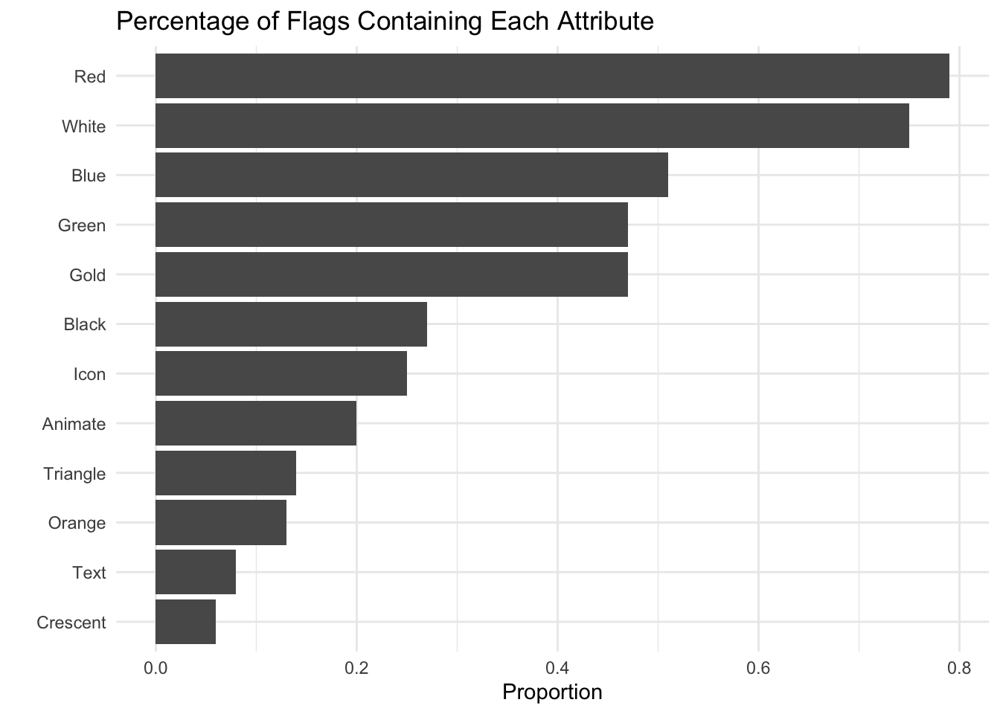
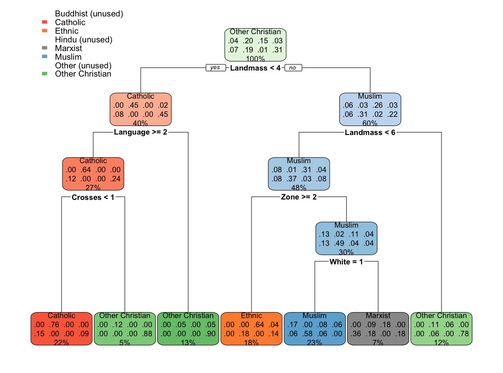

| Description | Value |
|---|---|
| Number of countries | 194 |
| Number of variables | 30 |
| Response variable | Religion (8 classes) |
| Train/Test split | 80% / 20% |
Predicting Religion from Flag Attributes
Abstract
This project applies multivariate statistical classification methods to predict the dominant religion of a country using physical attributes of national flags, along with geographic and demographic variables. Multiple models are compared to evaluate predictive performance and to explore whether symbolic flag characteristics provide meaningful signals about religion.
Introduction
The purpose of this project is to determine whether a country’s dominant religion can be predicted using observable attributes of its national flag, along with geographic and demographic characteristics.
Flags often contain colors, symbols, and patterns that may reflect cultural or religious identity. This project investigates whether those features contain enough statistical signal to distinguish between religions.
The central research question is:
- Can flag attributes and country-level characteristics predict dominant religion?
Data
The dataset comes from the UCI Machine Learning Repository and includes 194 countries with 30 attributes.
Religion Distribution
| Religion | Count |
|---|---|
| Catholic | 40 |
| Other Christian | 60 |
| Muslim | 36 |
| Buddhist | 8 |
| Hindu | 4 |
| Ethnic | 27 |
| Marxist | 15 |
| Other | 4 |
Numeric Variable Summary
| Variable | Mean |
|---|---|
| Area | 700.05 |
| Population | 23.27 |
| Bars | 0.45 |
| Stripes | 1.55 |
| Colors | 3.46 |
| Circles | 0.17 |
| Crosses | 0.15 |
| Saltires | 0.09 |
| Quarters | 0.15 |
| Sunstars | 1.39 |
Flag Attribute Frequencies

Methods
Three classification methods were used:
1. Multinomial Logistic Regression
Used because the response variable has multiple categories (8 religions). The model estimates probabilities for each class using predictor variables.
2. Discriminant Analysis
Used to separate observations into predefined groups. This method assumes underlying distributional structure and attempts to maximize separation between classes.
3. Decision Tree
Used to identify important variables and hierarchical splits. This method provides interpretability by showing how predictions are made step-by-step.
All models were evaluated using an 80/20 train-test split, and performance was measured using classification accuracy and confusion matrices.
Results
Model Performance
| Model | Accuracy | CI_Lower | CI_Upper |
|---|---|---|---|
| Multinomial Logistic Regression | 0.5385 | 0.3718 | 0.6991 |
| Discriminant Analysis | 0.5641 | 0.3962 | 0.7219 |
| Decision Tree | 0.6923 | 0.5243 | 0.8298 |
Decision Tree

Discussion
The decision tree model performed the best, achieving approximately 69% accuracy, outperforming both logistic regression and discriminant analysis.
This suggests that geographic and structural variables such as landmass, region, and language play a larger role in predicting religion than purely visual flag attributes.
While logistic regression was expected to perform well due to regularization, it performed the worst. This may be due to the complexity of separating eight categories using a linear decision boundary.
Discriminant analysis performed slightly better, likely because it is designed specifically for classification between groups.
Overall, results indicate that religion is more strongly tied to location and cultural context than to flag design alone.
Conclusion
This project demonstrates that:
- Religion can be predicted with moderate accuracy (~50–70%)
- Geographic variables are stronger predictors than visual flag features
- Decision trees provide both the best performance and interpretability
While flag attributes contain some signal, they are not sufficient on their own to fully classify religion.
Future Work
Future research could explore:
- Symbolism in architecture and art instead of flags
- Incorporating additional cultural variables
- Using ensemble methods for improved prediction
References
- Johnson, R. A., & Wichern, D. W. Applied Multivariate Statistical Analysis
- glmnet documentation: https://glmnet.stanford.edu
- UCI Flags Dataset: https://archive.ics.uci.edu/ml/datasets/Flags
Appendix
Full modeling code available upon request